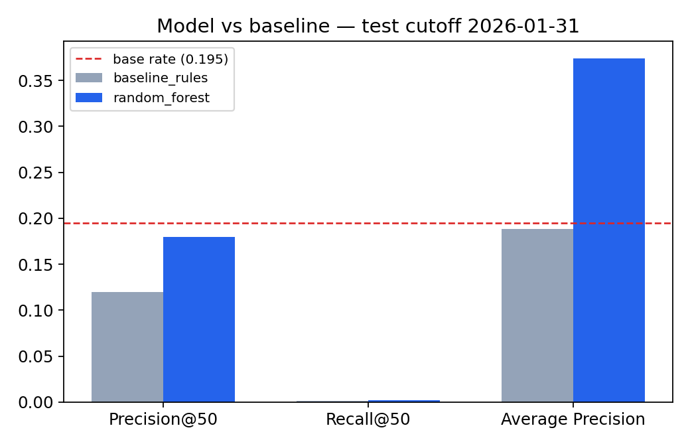
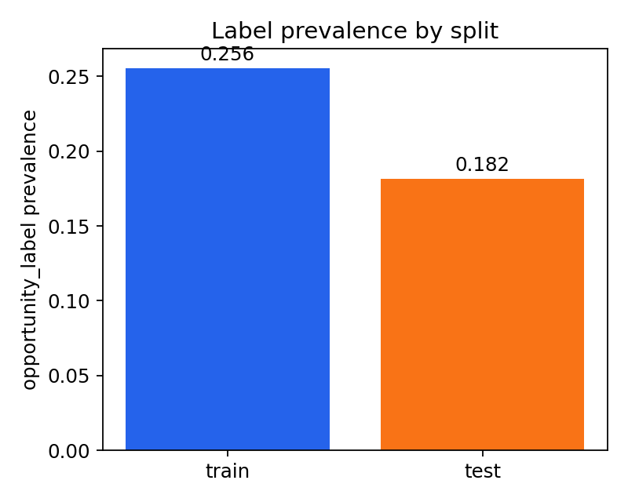
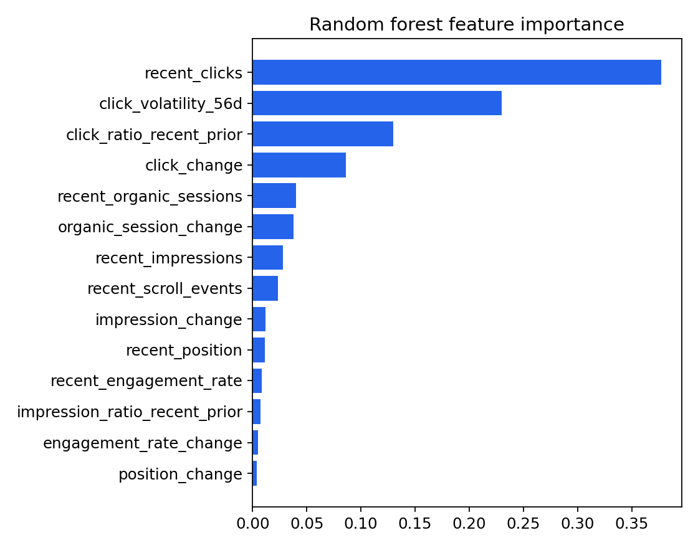
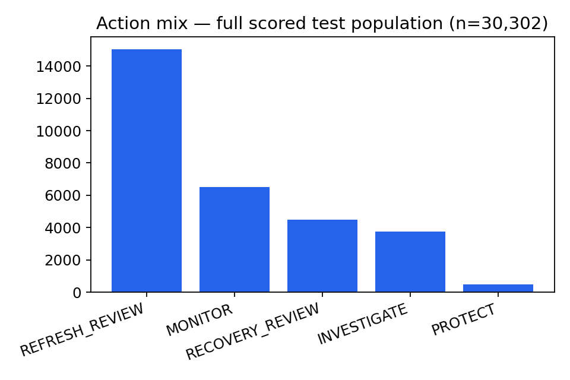
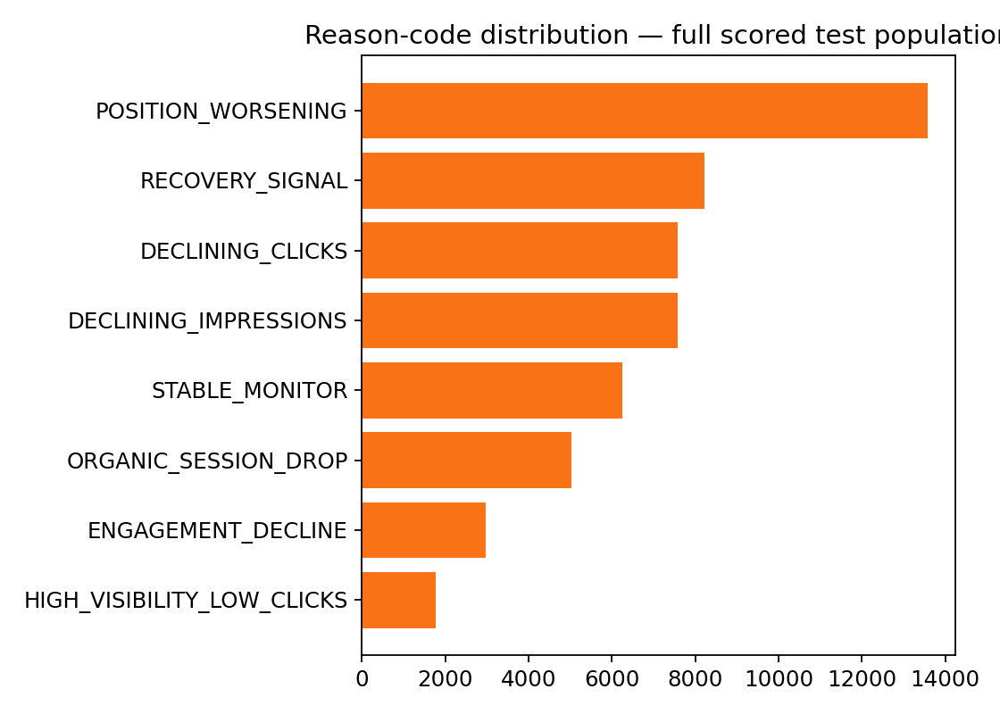

FlyRank ML Internship — Capstone — Refresh / Content Opportunity Scoring
A ranked, reason-coded review queue for content pages, built from search and engagement history in a 79-million-row warehouse — with an honest report of where the ranking works and where it doesn't.
Can a page's own recent search and engagement history be used to rank content pages so the ones most likely to see a meaningful future decline surface first for human review? We queried FlyRank's 79-million-row content-performance warehouse directly with DuckDB over three time-aware cutoffs, building leakage-safe recent/prior-window features and a future-click-ratio decline label whose threshold was read from the training data's own distribution. A random forest was compared against a transparent momentum-rule baseline on an identical, strictly later holdout. At a strict top-50 cutoff neither method clearly beat chance against this label's 19.5% base rate — the honest result, reported directly — but the model's Average Precision across the full ranked list was roughly double the baseline's (0.374 vs 0.188), indicating real if modest ranking signal that isn't concentrated in the first 50 rows. The output is a full ranked queue with reason codes and a suggested action per page, intended as a prioritization aid for a human reviewer, not a claim about search-engine behavior.
An editorial or SEO reviewer cannot manually audit every content page every month. What they need is not a verdict but an ordering: which pages are worth looking at first, and why. This project builds that ordering — a ranked action queue over anonymized content pages — from historical search and engagement signals alone.
The output is explicitly decision-support. It does not predict what a search engine will do, and it does not claim that refreshing a flagged page will recover its traffic. It claims only that, based on this portfolio's own history, some pages carry a combination of signals — declining clicks, worsening position, falling engagement — that make them worth a human's attention before others.
Release: FlyRank/internship-warehouse (build v20260703),
Hugging Face, gated — queried directly over hf:// Parquet with DuckDB, no full
download. A metadata-only check confirmed the live table: 78,835,655 rows,
spanning 2025-01-27 to 2026-06-30.
Tables used: fact_content_daily_performance (the time series —
every feature and the label come from here) and dim_clients (per-client tracking
start dates, used to keep every time window inside a client's own confirmed history).
dim_content and fact_content_query_90d were deliberately excluded —
the query table's fixed 90-day window overlaps any recent-month label, which would risk exactly
the leakage this design is built to avoid.
Columns used (confirmed against the live schema, not assumed):
report_date, client_hash_id, content_hash_id, gsc_data_available, ga4_data_available,
gsc_impressions, gsc_clicks, gsc_avg_position, ga4_pageviews, sessions_organic,
ga4_engaged_sessions, ga4_total_engagement_sec, scroll_events, month.
GROUP BY content_hash_id, report_date + ANY_VALUE()
deduplication anyway: it costs nothing when clean, and protects against silent
double-counting if duplicates exist elsewhere in the panel.
The panel is unbalanced, confirmed directly: of 104 clients, only
67 carry a confirmed gsc_data_start and only 51
carry a confirmed ga4_data_start; the rest have no verified tracking-start date on
one or both signals and are excluded from eligibility rather than assumed present. Confirmed
start dates span 2025-01-27 to 2026-06-02 (median 2025-11-05) — every time window below is
checked against each client's own start, never a single global calendar window.
Public safety: no URL, client name, or raw query ever leaves the warehouse.
This lane never touches the query table, the only one with anything query-shaped in it, and
every identifier shown below is an anonymized content_hash_id.
Unit of analysis: content page × cutoff date. For a cutoff T,
features use only data at or before T; the label uses only data strictly after
T. Three cutoffs were used — 2025-09-30 and 2025-11-30 for training, 2026-01-31 held
out for testing — all ending well before the sealed June 2026 month.
For a 28-day "recent" window and the preceding 28-day "prior" window: summed impressions, clicks, organic sessions, engaged sessions, engagement seconds, scroll events, and mean search position — plus derived changes and ratios between the two windows, and 56-day click volatility. Fourteen features in total; none reference anything after the cutoff.
future_click_ratio = (future_clicks + 1) / (recent_clicks + 1), computed over the
28 days strictly after the cutoff. A page is labeled a review opportunity if this ratio falls at
or below the 25th percentile of the training split's own distribution (0.667) —
the threshold was read off the data, not chosen in advance. Only pages meeting a visibility floor
(median recent_impressions among visible pages, 107) are eligible: an absent page
isn't a "declining" one.
Time-aware, not random: the test cutoff is strictly later than every training cutoff, mimicking real deployment (score today, get graded next month). The label threshold was computed on the training split only. Every audit question below was checked directly in code, not assumed:
| Check | Answer |
|---|---|
| Future metrics used as features? | No |
| Label threshold computed on full data before splitting? | No — train split only |
| Model fit on test data? | No |
| Split time-based? | Yes — test cutoff strictly later |
| Population selection uses outcome-window info? | No |
"A page is worth reviewing first if it's already losing clicks and losing search position,
relative to its own recent history." A transparent score with no fitted weights:
baseline_score = -click_ratio_recent_prior + position_change.
Not rebalanced with SMOTE — this is a ranking problem, not an accuracy problem. Precision@50, Recall@50, and Average Precision are used, always reported against the base rate.
Trained on 48,697 rows (base rate 25.6%), tested on 30,302 held-out rows (base rate 19.5%).
| Method | Precision@50 | Hits/50 | Recall@50 | Avg. Precision |
|---|---|---|---|---|
| Baseline (rules) | 0.120 | 6 | 0.001 | 0.188 |
| Random forest | 0.180 | 9 | 0.002 | 0.374 |
| Base rate | 0.195 | |||

With a ~19.5% base rate, picking 50 pages at random lands about 9–10 true positives by luck alone. The random forest got 9. The rule baseline got 6 — below chance. Precision@50 alone does not support a "the model wins" claim here. Where the model does show a real edge is Average Precision, a whole-list ranking-quality measure: 0.374 vs the baseline's 0.188 — roughly double, and roughly double the base rate too. The advantage is real; it just isn't concentrated in the first 50 rows out of a densely-positive pool. A mixed, honestly reported result is the correct thing to publish here.


recent_clicks, 37.7%) is a plausible, non-circular driver — a past-window aggregate, not the future-window column the label is built from — and does not dominate the way a leaked feature would (no single feature approaches 100%).Errors, read before believing the score: at a naive 0.5 probability
threshold, the model produced 363 false negatives and 10,747 false positives out of 30,302 test
rows. This reflects class_weight="balanced" pushing many borderline pages above 0.5
against an already-elevated base rate — a reason to use the ranked score for prioritization, not
the binary threshold, in production.
opportunity_label is an operational definition — a 25th-percentile cut on this
portfolio, in this period — not a certified measure of content quality.Every scored page carries an action and a reason code built from the same features the model saw — nothing here requires trusting the model's internals.
| Action | When |
|---|---|
| REFRESH_REVIEW | high score + a decline reason code (declining clicks/impressions, worsening position, session drop) |
| INVESTIGATE | decline and recovery codes both present — conflicting signal |
| PROTECT | high visibility, low clicks, no clear decline yet |
| RECOVERY_REVIEW | recovery signal present, no decline codes |
| MONITOR | everything else |


Full top-50 queue with all
reason codes and supporting signals: work/outputs/capstone_ranked_recommendations.csv
in the repository.
Every number on this page traces back to an executed cell in
work/notebooks/capstone.ipynb, run top to bottom in Google Colab against the live
warehouse with a personal Hugging Face read token stored in Colab Secrets — never hardcoded or
printed. Random seed 42 throughout.
work/notebooks/capstone.ipynbwork/outputs/capstone_ranked_recommendations.csvwork/outputs/capstone_model_comparison.jsonTo rerun: open the notebook in Colab, add your own Hugging Face token as the Colab secret
internship-token, request dataset access at
FlyRank/internship-warehouse
(instant approval), and run all cells.